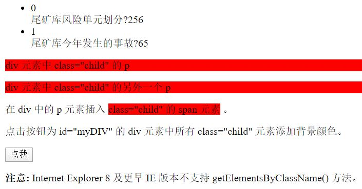

# ES6 新特性
//※※※※※※※※※※※※※※※※※※※※※※※※※※※※※※※※※※※※※※※※※※※※※※※※※※※※※※※※※※※※※※※※※※※※※※※※※※
# ES6 let 块作用域
t | if(true){ |
| let a = 123; |
| console.log(a); |
| } |
//※※※※※※※※※※※※※※※※※※※※※※※※※※※※※※※※※※※※※※※※※※※※※※※※※※※※※※※※※※※※※※※※※※※※※※※※※※
# ES6 模板语法
t | var name = "张三"; |
| var age = 20; |
| console.log(`${name}的年龄是${age}`); |
//※※※※※※※※※※※※※※※※※※※※※※※※※※※※※※※※※※※※※※※※※※※※※※※※※※※※※※※※※※※※※※※※※※※※※※※※※※
# ES6 属性的简写
t | var name = "zhangsan"; |
| |
| var app1 = { |
| name:name |
| } |
| |
| var app2 = { |
| "name":name |
| } |
| |
| var app3 = { |
| name |
| } |
| console.log(app1.name); |
| console.log(app2.name); |
| console.log(app3.name); |
//※※※※※※※※※※※※※※※※※※※※※※※※※※※※※※※※※※※※※※※※※※※※※※※※※※※※※※※※※※※※※※※※※※※※※※※※※※
# ES6 buffer 简写
t | var name = "李四"; |
| var app4 = { |
| name, |
| run:function(){ |
| console.log(`${this.name}在跑步`); |
| } |
| } |
| var app5 = { |
| name, |
| run(){ |
| console.log(`${this.name}在跑步`); |
| } |
| } |
| app5.run() |
//※※※※※※※※※※※※※※※※※※※※※※※※※※※※※※※※※※※※※※※※※※※※※※※※※※※※※※※※※※※※※※※※※※※※※※※※※※
# 箭头函数
t | setTimeout(function(){ |
| console.log("执行"); |
| },1000); |
| setTimeout(()=>{ |
| console.log("执行"); |
| }, 1000); |
| |
| |
| |
| function getData1(){ |
| |
| setTimeout(()=>{ |
| var name1 = "张三1"; |
| },1000); |
| return name1; |
| } |
| |
| |
| function getData2(callback){ |
| setTimeout(()=>{ |
| var name2 = "张三2"; |
| callback(name2); |
| }); |
| } |
| getData2((aaa)=>{ |
| console.log(aaa); |
| }); |
| |
| var p1 = new Promise((resolve, reject)=>{ |
| setTimeout(()=>{ |
| var name3 = "张三3"; |
| resolve(name3); |
| },1000); |
| }); |
| p1.then((data)=>{ |
| console.log(data); |
| }); |
| |
| function getData3(resolve, reject){ |
| setTimeout(()=>{ |
| var name4 = "张三4"; |
| resolve(name4); |
| }, 1000); |
| } |
| var p2 = new Promise(getData3); |
| p2.then((data)=>{ |
| console.log(data); |
| }) |
//※※※※※※※※※※※※※※※※※※※※※※※※※※※※※※※※※※※※※※※※※※※※※※※※※※※※※※※※※※※※※※※※※※※※※※※※※※
# async 声明异步方法，await 等待异步方法执行完成
t | |
| async function test1(){ |
| return "您好！"; |
| } |
| |
| |
| async function test2(){ |
| return new Promise((resolve, reject)=>{ |
| setTimeout(()=>{ |
| var name5 = "张三5"; |
| resolve(name5) |
| }, 1000); |
| }); |
| } |
| async function output(){ |
| var data = await test2(); |
| console.log(data); |
| } |
| output(); |
| |
| |
| async function isDir(path){ |
| return new Promise((resolve, reject)=>{ |
| fs.stat(path, (err, states)=>{ |
| if(err){ |
| console.log(err); |
| reject(err); |
| return ; |
| } |
| if(states.isDirectory()){ |
| resolve(true); |
| }else{ |
| resolve(false); |
| } |
| }); |
| }); |
| } |
| |
| function getDir(){ |
| var path = "./testfs"; |
| var dirArr = []; |
| fs.readdir(path, async (err, data)=>{ |
| if(err){ |
| console.log(err); |
| return ; |
| } |
| for(var i = 0; i < data.length; i++){ |
| if(await isDir(path + "/" +data[i])){ |
| dirArr.push(data[i]); |
| } |
| } |
| console.log(dirArr); |
| }); |
| } |
| getDir(); |
| |
# JSON.parse(text[, reviver])
参数说明：
text:
必需， 一个有效的 JSON 字符串。
reviver:
可选，一个转换结果的函数， 将为对象的每个成员调用此函数。
返回值：
返回给定 JSON 字符串转换后的对象。
l | <!DOCTYPE html> |
| <html> |
| <head> |
| <meta charset="utf-8"> |
| <title>title)</title> |
| </head> |
| <body> |
| <p id="demo">测试JSP函数库JSON.parse()</p> |
| <script> |
| const json_str = '{"result":true, "count":42}'; |
| const json = { "name":"MYZ" }; |
| |
| |
| const obj = JSON.parse(json_str); |
| console.log(obj.count); |
| console.log(obj.result); |
| |
| console.log(obj); |
| console.log(json); |
| console.log(typeof(json_str)); |
| console.log(typeof(json)); |
| console.log(typeof(obj) === typeof(json)); |
| |
| for(x in json){ |
| console.log(x); |
| console.log(json[x]); |
| } |
| |
| JSON.parse('{"result":true, "count":42}', function(k, v) { |
| console.log( k ); |
| return v; |
| }); |
| |
| JSON.parse('{"1": 7, "2": 2, "3": {"4": 4, "5": {"6": 6}}}', function(k, v) { |
| console.log( k ); |
| return v; |
| }); |
| |
| </script> |
| </body> |
| </html> |
# JSON.stringify(value[, replacer [, space]])
value:
将要序列化成 一个 JSON 字符串的值。
replacer 可选:
如果该参数是一个函数，则在序列化过程中，被序列化的值的每个属性都会经过该函数的转换和处理；
如果该参数是一个数组，则只有包含在这个数组中的属性名才会被序列化到最终的 JSON 字符串中；
如果该参数为 null 或者未提供，则对象所有的属性都会被序列化；
关于该参数更详细的解释和示例，请参考使用原生的 JSON 对象一文。
space 可选:
指定缩进用的空白字符串，用于美化输出（pretty-print）；
如果参数是个数字，它代表有多少的空格；上限为10。该值若小于1，则意味着没有空格；
如果该参数为字符串（当字符串长度超过10个字母，取其前10个字母），该字符串将被作为空格；
如果该参数没有提供（或者为 null），将没有空格。
返回值:
一个表示给定值的JSON字符串。
t | const json_str = '{"result":true, "count":42}'; |
| const json = { "name":"MYZ" }; |
| console.log(typeof(json_str)); |
| console.log(json_str); |
| console.log(typeof(json)); |
| console.log(json); |
| |
| |
| |
| json_ify = JSON.stringify(json); |
| console.log(typeof(json_ify)); |
| console.log(json_ify); |
| |
| json_parse = JSON.parse(json_ify); |
| console.log(typeof(json_parse)); |
| console.log(json_parse); |
| |
| console.log(json["name"]); |
| console.log(json_parse["name"]); |
| console.log(json["name"] === json_parse["name"]); |
t | const json_str = '{"result":true,"count":42}'; |
| const json = { "name":"MYZ" }; |
| |
| var obj1 = JSON.parse(json_str); |
| var obj2 = JSON.stringify(obj1); |
| console.log(json_str); > "{"result":true,"count":42}" |
| console.log(obj2); > "{"result":true,"count":42}" |
| console.log(obj2 === json_str); > true |
t | const json_str = '{"result":true, "count":42}'; |
| const json = { "name":"MYZ" }; |
| |
| var obj1 = JSON.parse(json_str); |
| var obj2 = JSON.stringify(obj1); |
| console.log(json_str); |
| console.log(obj2); |
| console.log(obj2 === json_str); |
t | const json_str = '{"result": true,"count":42}'; |
| const json = { "name":"MYZ" }; |
| |
| var obj1 = JSON.parse(json_str); |
| var obj2 = JSON.stringify(obj1); |
| console.log(json_str); |
| console.log(obj2); |
| console.log(obj2 === json_str); |
# html+JS 实现循环编辑 HTML 标签

l | <!DOCTYPE html> |
| <html lang="en"> |
| <head> |
| <meta charset="UTF-8"> |
| <title>Employee</title> |
| </head> |
| <body> |
| <div class="znfz-cont"> |
| <ul id="data" class="znfz-list"> |
| </ul> |
| </div> |
| |
| <div id="myDIV"> |
| <p class="child"> div 元素中 class="child" 的 p </p> |
| <p class="child"> div 元素中 class="child" 的另外一个 p </p> |
| <p>在 div 中的 p 元素插入 <span class="child">class="child" 的 span 元素</span> 。</p> |
| </div> |
| <p>点击按钮为 id="myDIV" 的 div 元素中所有 class="child" 元素添加背景颜色。 </p> |
| <button onclick="myFunction()">点我</button> |
| <p><strong>注意:</strong> Internet Explorer 8 及更早 IE 版本不支持 getElementsByClassName() 方法。</p> |
| |
| <script> |
| function myFunction() { |
| var x = document.getElementById("myDIV"); |
| var y = x.getElementsByClassName("child"); |
| var i; |
| for (i = 0; i < y.length; i++) { |
| y[i].style.backgroundColor = "red"; |
| } |
| } |
| </script> |
| |
| </body> |
| <script> |
| var lists =[ |
| { |
| "content":"尾矿库风险单元划分?", |
| "read_num":256 |
| }, |
| { |
| "content":"尾矿库今年发生的事故?", |
| "read_num":65 |
| } |
| ] |
| var str=""; |
| for (var i = 0; i < lists.length; i++) { |
| str += "<li class='znfz-num'>" + i + "</li>"; |
| str += "<router-link class='znfz-txt' to=''>" + lists[i].content + "</router-link>" |
| str += "<span class='read-num'>" + lists[i].read_num + "</span>" |
| } |
| |
| |
| |
| document.getElementsByClassName("znfz-list")[0].innerHTML=str; |
| |
| var name = "张三"; |
| var age = 20; |
| console.log(`${name}的年龄是${age}`); |
| |
| </script> |
| </html> |